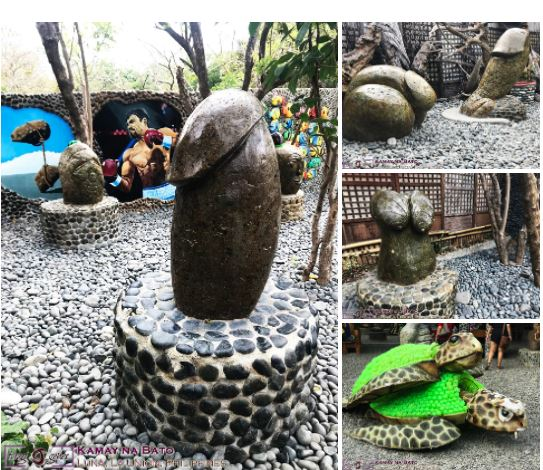

Grapes Farm of La Union: A Sweet Side Trip
The province of La Union is not just known for its amazing beaches but also in great produce of grapes. You can have a short side trip in one of the grape farms which is a few miles away from the San Juan. Let me show to you our experience and share our helpful guide in the grape farm of La Union.

Grape Farm La Union: History
La Union is known for its large produce of luscious grapes. But how do grapes thrive in such a tropical climate like the Philippines? All things are made possible from continuous research and hard work from the grape king of the Philippines, Mr. Avelino A. Lomboy. (Lomboy Farms, 2015) It was back in the 1970s when viticulture, the study of grapes and its production, was introduced in the Philippines. The pioneer vineyards first started in the Visayas and Mindanao region; but due to disease epidemics and poor output in the area, these enterprises were ceased later on. During 1972, Mr. Avelino A. Lomboy started planting his first 20 cuttings on his backyard. After years of various research and trial and error, the vines bore fruit and today most of the grapes are produced in La Union. (Lomboy Farms, 2015)
Our Experience in Gapuz Grapes Farm
Most of the grape farm in La Union are located in the municipality of Bauang. We decided to visit the Gapuz Grapes Farm before heading to the beautiful beaches of San Juan. At the location, we met the locals and they showed the direction going to the farm.
Gapuz Grapes Farm greeted us with rows of attractive green vineyards. As picturesque and sweet as it may seem, the highlights are found in its fruit – the charming ripe, sun-drenched grapes. The farmers tending the place offered us their tangy and sweet produce.
Picking Season
Fruit picking season in the grape farms of La Union happen every year from March to May. We visited the farm off-season and the grapes are still desirable and delicious.
The farmers also offered their exclusive grape and guyabano wine, all produced in the farm. The grape wine is red in color and it has a fruity and sweet taste. On the other hand, the guyabano wine has a potent piquant flavor in sweetish white color. I prefer the grape wine though. In exchange with the farmers’ congeniality, we bought a couple bottles of their wine as pasalubong to our love ones in the metro. The small ones cost around ₱100 ($2.00) while the bigger bottles cost ₱200 ($4.00).
Visiting this grape farm in La Union was really worth it. I will surely buy more produce for my family and friends if ever I’ll travel up north again. History were made from a small piece of cuttings with years of patience and arduous research and experimentation. A big salute to its pioneers for cultivating grapes in the country. Like what the saying goes, big things come from small beginnings.